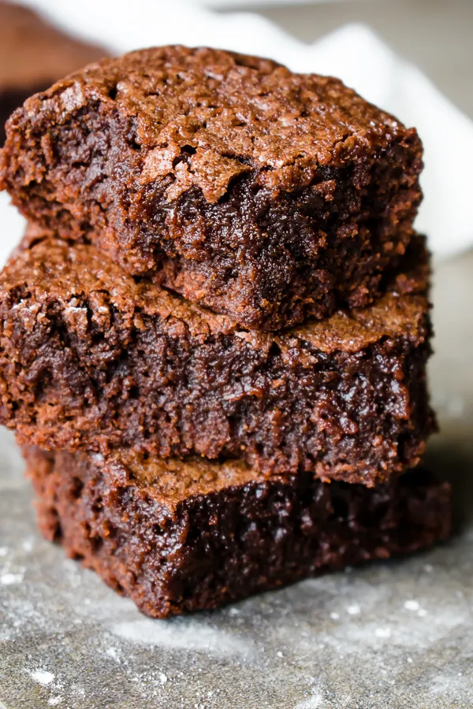

breaded chicken red wine pasta

Description
A cheesy red wine tomato sauce with a shallow fried then baked
panko breaded chicken breast
Ingredients
Chicken
- 1 Chicken breast 170g
- Panko 30g
- Flour 1/4 cup
Flour spice blend
- Red pepper flakes 1/4 tsp
- Dried basil 3/4 tsp
- Garlic powder 1/4 tsp
- Onion powder 1/4tsp
- Sugar 2/4 tsp
- Salt 2/4 tsp
- pepper 1/4 tsp
- 3-4 tbsp oil
Pasta
- Le pappardelle pasta 94g
Sauce
- Canned crushed tomatoes 7/8 cup
- Red wine (I used merlot) 1/2 cup
- Mozzarella 67g (some for chicken rest for sauce, balance it out to your liking)
- Onion 47g
- Olive oil 1 tbsp
- Garlic 1 clove
- Pasta water
- Dried basil 1 tsp
- Dried Parsley 3/4 tsp
- Oregano 3/4 tsp
- Salt 2/4 tsp (at the end add salt to taste if you feel it needs)
- Pepper 1/4 tsp
- Sugar 1 and 1/4 tsp
Garnish
- Cherry tomatoes
- Dried parsley
Steps
Chicken
- Batter and lightly fry chicken, then bake at 400,
after put sauce and cheese and broil
Sauce
- Add olive oil and sauté onions and garlic till the garlic has a
golden brown look/ a crunchier texture and the onions are slightly
caramelized
- Add the wine and deglaze the pan, cook out alcohol to a sauce
with a decent thickness. Quarter way through add a bit of pasta
water not a lot. You want a saucy consistency
- Add canned crushed tomatoes and then add the spice blend with
the sugar and let it cook into the sauce. Cook down to desired
thickness or add pasta water to thin it out. Cook to your desired thickness
- Take some of the sauce and put on the cooked chicken, add the cheese on top and
broil it in the oven till cheese is golden.
- Add mozzarella to your sauce and let it melt and infuse in the sauce.
- Add pasta, heat
- Add chicken on top and garnish